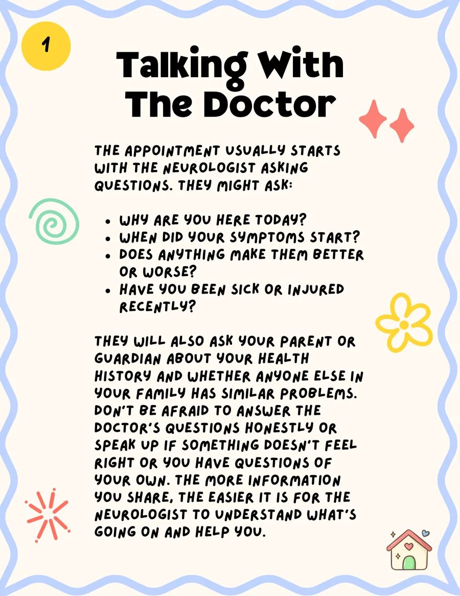

Step 1
Talking With the Doctor
The appointment usually starts with the neurologist asking questions. They might ask why you are there, when your symptoms started, whether anything makes them better or worse, and whether you have been sick or injured recently.
They will also ask your parent or guardian about your health history and whether anyone else in your family has similar problems. Do not be afraid to answer honestly or speak up if something does not feel right. The more information you share, the easier it is for the neurologist to understand what is going on and help you.
